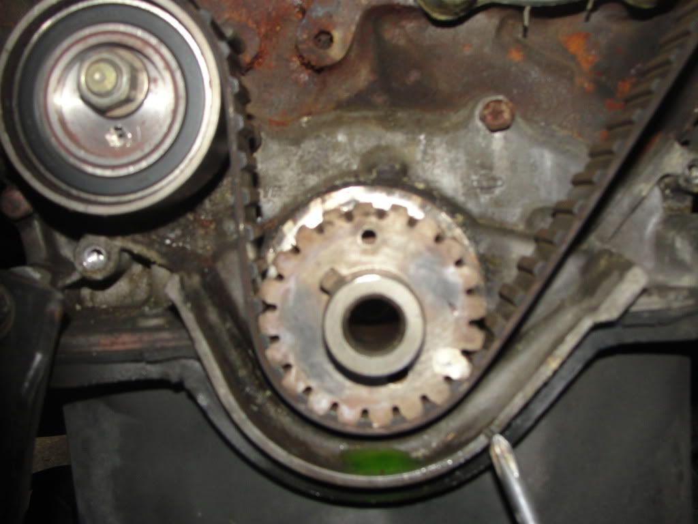
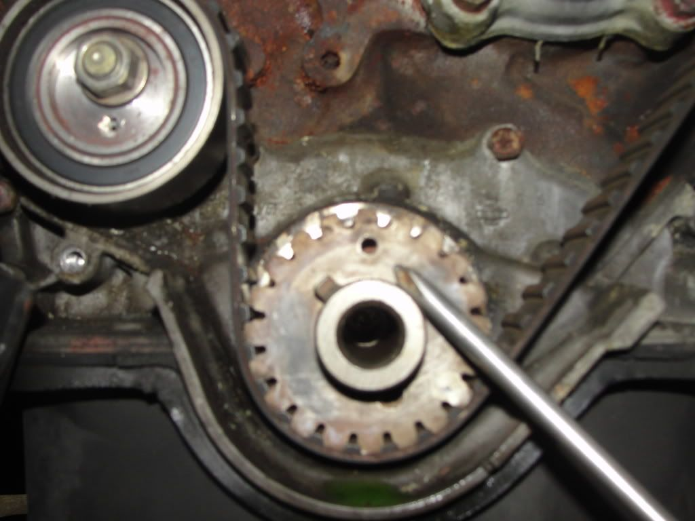
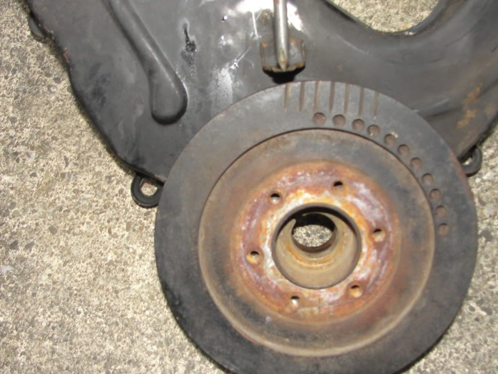
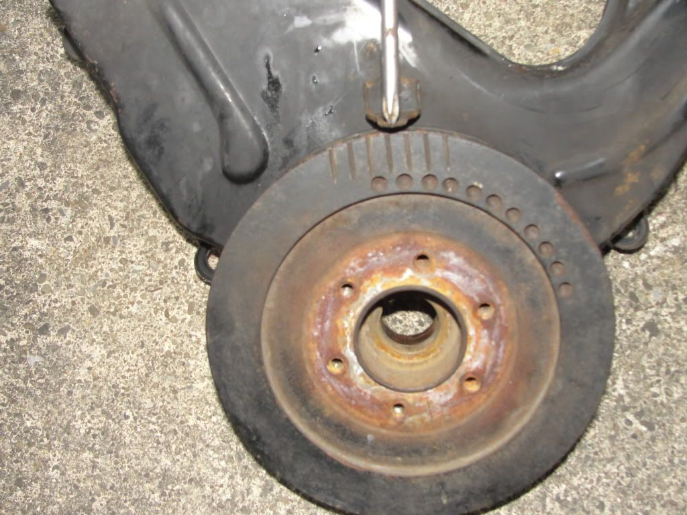

-
I removed the bolt holding the crankshaft pulley on. Before I did this I had the timing marks on the pulley lined up so the no 1 cylinder was at TDC. In the process of loosening the bolt the pulley turned maybe 30 degrees. But when I took the top timing belt cover off both the marks for the timing were still basically exactly lined up. Is it bad that i turned the crank shaft CCW a little bit when removing. Also if the crankshaft just moved can i turn that back to align the mark with out turning the top two because their marks match up. I don't have the bottom cover off so i don't know if it moved, could the pulley on the outside move so the marks don't line up but the one on the inside still be right? -
Re: Crankshaft Pulley removal
if you want to do it the safest way… remove both valve covers and loosen the bolts on the rocker shafts ON BOTH SIDES, and make sure they're all loose and the shafts are just floating ontop of the valves.
then you can turn the crank shaft as much as you want to align it- the valves will stay shut. Put the new belt and belt tensioner on (are you replacing timing belt?), and then tighten the rocker shafts to 13-16ft lbs while rotating the engine over multiple times. helps to remove the spark plugs when doing so. makes it easier to turn.
and yes, the pulley is two pieces, and the rubber isolator could shift; moving the timing ring in relation to the actual timing of the crank. This is a sign that your crank pulley may have a scuffle with the rest of the stuff in your engine bay, or even break the snout off the crank…
I would replace it if possible. -
Re: Crankshaft Pulley removal
yes i am doing the timing belt. Before removing any parts I took a socket wrench and turned the pulley on the outside of the engine connected to the drive belts to align to TDC. Then while turning CCW on the pulley out side the timing belt case the pulley turned from the first timing mark to somwhere in the middle of the marks the stoped and I got the bolt out. I took the top half of the timing belt cover off and the two were still at the marks.
Is there a way for that pulley on the out side to turn with out turning the one on the inside car was in gear.
Once i take the bottom timing belt cover off and if the bottom pulley does not align and the top two still are i can lossen the rockers and turn the bottom one individully or is this mistake beyond a simple repair.
sorry if i repeated myself its my first time doing this and i just want to be clear. -
Re: Crankshaft Pulley removal
well … the engine is an interference motor.. you would have to have the strength of a gorilla on steroids to turn the motor over enough to bend the valves and continue turning. it would eventually come to a stop.
Chances of actually having the belt jump while turning Counter Clockwise are slim under that much pressure, but it's not impossible. I've turned my motor backwards and it's never done it.
now that you have the bolt loose, you can thread it back in until it bottoms out and you can turn the motor the way it's supposed to turn.
If you remove the spark plugs or loosen them completely and leave them in the spark plug holes so nothing falls in… you can turn the motor over without the crank bolt tightening up so much again because its easier to turn the motor over.
Then when you need to reassemble everything you just give the ratched a sharp jab in the counter-clockwise direction and it should move like a hair before the bolt becomes loose… Then you put all your covers on, make sure your belt tension is all good, check everything twice or three times… then tighten it back down.
But take the lower cover off and make sure the crank timing gear is aligned. if it's not, I would remove the rockers. That's just me. -
Re: Crankshaft Pulley removal
Thanks I am doing that today hopefully all goes well -
Re: Crankshaft Pulley removal
Here are some pictures to explain what I am asking

In the above picture the screw driver points to the static mark. On the gear there is a white paint mark you can see(it was there when i removed the cover i did not put it there), in the middle of that mark there is a punch the size of the dents on the top gears the picture doest really show it. Is this the mark I am looking for. In other pictures online it looked bigger and circular

What the screw driver points to is a hole with out threads. As you can see it is no where near the timing mark. There is also another hole but with threads close to the punch mark with white paint on it Could either of these be the timing mark (note: you can almost see the punch mark I described earlier)
The next two picture show how much the crank shaft pulley turned CCW (note: both top timing marks are aligned near perfectly i just did not take pictures)

Before removing the center nut this is how it looked (i think this is the position for cylinder no 1 at TDC)

With the car in 5th gear i turned CCW to loosen the nut in the center when i was done loosening this is how far the marks were off
I have TWO main questions out of all of this 1.) the white paint mark with the dent in the middle is that the timing mark. 2.) If that pully rotated as shown when i loosened the nut how could the timing marks still line up inside the timing belt cover. I did not show the top ones but they are good. -
This job turned out to be a bear ! I cannot get the bolt out from the crank shaft. Is the bolt a right or left turn bolt? What do I use to ankar the pully to keep it from turning? Any other specifics I need to know ? Thanks

Copyright © 2006–. All rights reserved. Privacy Policy
Comment